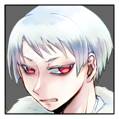

GM
それではシノビガミセッション「神楽八十神追」第五回！
GM
前回は第三サイクル第一シーン、瞠さんの手番の途中でしたね。
GM
衝撃の事実が明かされたところで切られ、そのリアクションからの再開にございます。
GM
◆メインフェイズ第三サイクル第一シーン
シーンプレイヤー：百々坂 瞠 再開
百々坂 瞠
「私もまたそうだったよ。
言うべき何も出はしなかったさ」
百々坂 瞠
「琴梨。
私はきみの重責の、その質を……ずっと見誤っていたんだな」
三榊 琴梨
沈黙を保っていた彼女が口を開けば、凛とした声。
三榊 琴梨
「幼き頃からその運命を受け容れてきました。
今になって、そのことを嘆くつもりはございません。
お姉さまと『八千矛』様が、心を痛めることはないのです」
三榊 琴梨
逡巡は、瞬く間に夜闇に紛れる。
月光に照らされたその顔は、たおやかな『姫君』のものではなく、
三榊 琴梨
「まさかお姉さまの身にも神器が在るなんて、そんなこと夢にも思いませんでした。
……神器は、人の身に余ります」
三榊 琴梨
「琴梨は、お姉さまに何かあったら……」
三榊 琴梨
そして、そこで口を噤んだ。
何も言えなくなった、というのが正しいかもしれない。
百々坂 瞠
「……確かに、神器を最も知るのは、この場ではきみだろう。
だがそれこそ、きみが心を痛める必要などない。
きみも、……そして私もまた、あずかり知らなかったことだ」
葦原 名張
思わず『八千矛』であることを忘れて言葉を漏らしそうになるのをぐっと抑え込んだ。
この場には『姫君』である三榊 琴梨も居るのだ。
三榊 琴梨
神器が二つ在ること。
それは、この儀式を万全にするためのものなのだろうか、と思う。
『姫君』に何があろうとも、国守の儀式を完遂させる。保険はあればあるほどいい。実に合理的で正しく思う。
三榊 琴梨
今まで『姫君』として生きてきた自分は何だったのか？
とも、一瞬思った。
多くのものを投げ打ち、諦めた。そんな人生。
三榊 琴梨
けれども、それ以上に。
それ以上に強く思うのは。
三榊 琴梨
「……琴梨から、お姉さままで取らないで」
三榊 琴梨
ほんの小さな、小さな呟き。
堪えようとして堪え切れず、漏れ出てしまったそれを、悔いるように目を伏せた。
百々坂 瞠
そのあまりにも素直な、およそこの場には似つかわしくない吐露に。
ひとつ、思い起こすことがある。
百々坂 瞠
「……『八十神』が言っていたよ。
堅洲の鬼とは、それを造り上げた比良坂（わたしたち）だと」
百々坂 瞠
「今となっては返す言葉もない。
抜け出せぬ網を、足を取る泥を作ることこそが私たちの得手だったが、
囚われているのもまた私たちだった」
百々坂 瞠
「私には、それが、きみなんだ。
琴梨」
三榊 琴梨
伝えられた『八十神』の言に、はっと目を見開く。苦々しい表情を浮かべる。
その言葉はもっともだ。言い返すことなどできはしない。
三榊 琴梨
けれど、続く言葉に。
いよいよ泣き出しそうに、顔を歪めてしまう。
百々坂 瞠
「……私は、昔からそのきみの我が好きだった。
ただ粛々とした『姫君』であるだけではない。
確かな望みを持つきみと、微かなりそれを叶える手助けのできることが」
百々坂 瞠
「……この場でまで。
きみの望みになれて、私は幸せ者だよ」
百々坂 瞠
この企てを知っていれば、それこそ粛々として儀を組む側に回ったような。
網と泥の具現のような女が、
これほど純粋な心を向けられることを、他に何と呼べばいい。
三榊 琴梨
言いたいことは山のようにあるのに、二の句が継げない。
泣くことだけは堪えた。
それが『姫君』としての立場を守る、精一杯だった。
葦原 名張
『八千矛』である、葦原 名張は言葉を発さず思案を巡らせる。
共に長い時間を過ごし、血が繋がらなくとも姉妹の情を分け合い、その身にそれぞれ神器を宿した2人。
三榊 琴梨
「お姉さまと出逢えたこと、嬉しく思っています。決して、後悔はしていません」
百々坂 瞠
その目に揺れる、月光を散らす薄膜。
今にもそれの散りそうな顔でなおも笑ってみせる様子に、かける言葉は。
百々坂 瞠
「ありがとう、琴梨」
「……きみがいま、そう思ってくれること。それを言葉にしてくれること。
私は……何よりもうれしく思う」
百々坂 瞠
忍びの関係が明日をも知れぬことなど、知りすぎるほど知った。
この月の上る前に、このようなことになるなどとは露ほども思わなかったように。
そしてこれからも、きっとそうだと分かっている。
百々坂 瞠
だがここにある今は、誰に変えられよう。
そしてこの今がどれほど快くとも、
そこに留まれはしない。
百々坂 瞠
「琴梨。きみが知らなければならないことは、まだある。
……聞いてくれるな、『姫君』として」
百々坂 瞠
どこまでも卑怯だ。
この網に共に絡められるものでありながら、
そう聞けば頷くしかないことを誰よりも知っている。
そしてそれを振るうことに未だもって躊躇もない。
百々坂 瞠
名張さんの【秘密】を琴梨さんへ譲渡します。
GM
了解しました。
琴梨から野葛に情報共有が発生し、公開ですね。
GM
【秘密：葦原 名張】
数千年、代々繰り返されてきたこの儀式。国守のためのみならず、あなたの代で果たし損ねるわけにはいかない。儀式の手順は熟知している。姫君に祭具『羽喫鳴鏑』を渡し神器『生大刀・生弓矢』の封印を解き、『八十神』を討つ。それだけだ。
しかし、儀式を執り行い始めてから気付く。何やら神器に異変が起きており、本来あるべき状態ではないと気配で気づいてしまった。それでも始まってしまった儀式を止めることは出来ない。
あなたはプライズ・祭具『羽喫鳴鏑』を持つ。
プライズ・祭具『羽喫鳴鏑』は感情判定の際に、対象に祭具を手渡すことを宣言すると、感情判定を判定なしに成功する。そうしたとき、対象が神器を所持していた場合その封印を解き、獲得する。神器の封印を解いたとき、このプライズは消滅する。
GM
補足：このプライズに秘密はありません。読みは『はばみなりかぶら』です。
百々坂 瞠
「……あるいは。
きみにももはや、感じ取れるかもしれないな」
三榊 琴梨
「――はい」
しっかりと頷く。泥と網に足を取られることを分かりながら。
三榊 琴梨
それでも良かった。
覚悟はしていたし、瞠もまた、強き忍びであることは、よく分かっている。
三榊 琴梨
それに。
『琴梨』として、『瞠』の言葉をちゃんと聞いて伝えられたから。
後悔は無い。今までも、これからも。
三榊 琴梨
――告げられたそれ。
『姫君』が、『八千矛』を見る。
葦原 名張
『八千矛』はまだ口を開かない。
世界を救うための儀式が『姫君』との婚姻の儀であるだけでなく、その儀式を成立させるために、己の選択で必ず失われる命を選ばなければならない。
葦原 名張
さりとてなにか言葉を漏らしていたとしても、ここまでの時間で交わした言葉から、己が何を決めるべきかははっきりしている。
それは今後も揺らぐことはない。
葦原 名張
否、揺らがせてはならない。
それは『姫君』たる三榊 琴梨の言葉も、神器を宿す百々坂 瞠の言葉も、『八千矛』でもあり葦原の筆頭である俺の言葉を裏切ることになる。
葦原 名張
それは覚悟も人生も否定することになる。
葦原 名張
「……俺にできることは、そう多くはねぇ」
葦原 名張
「……どれだけ考えてみても神器を持つ2人を救うこともできねぇし、当然儀式を中断するなんてありえん」
葦原 名張
「俺のオヤジにもジイさんにも、当然比良坂にも言いたいことはあるが……」
葦原 名張
選択の余地がない状況で、重い選択を強いられる。
なにもかもが不愉快で腹立たしい。
それでもこの儀式に参加するすべての忍のために、世界のために、決断を下せるからこそここに居るのだ。
葦原 名張
「俺は三榊 琴梨を『姫君』として儀式をやりとげると誓おう」
三榊 琴梨
張り詰めた空気の最中に挟まれた一拍の間に、目を瞬かせる。
三榊 琴梨
琴梨に告げられた誓いに、楚々として首を垂れる。
三榊 琴梨
役目を、果たす。
眼前の彼もまた、理不尽に重い決断を迫られ、下した。
ああ、『八千矛』として、なんてこれ以上ないひとだろう！
三榊 琴梨
役目を、果たす。
否――彼と彼女の、決意に報いる。
それが唯一、できることだ。
百々坂 瞠
頼まれた。
その言葉でかすかに上がった口角は、ふたりの宣誓の終わればなおはっきりと。
百々坂 瞠
『八千矛』よ。
よくぞこの場に至ってくれた。
『姫君』よ。
よくぞこうまで育ってくれた。
百々坂 瞠
そうしてよくぞ選んでくれた。
今だけは、この呪縛じみた『神器』にも少しは礼を言える。
この場を見届ける、その役目を務めることができた理由なれば。
だがそれは例外にすぎない。
この場にいるはずもないものなど、最初から顧みられる道理もない。
それはどこまでも、正しいことだ。
百々坂 瞠
「その誓い、確かに聞き届けた」
「儀に縁なきものなれど。
故にあるべからざる第三者として。私はその誓いがなされたことの証人となろう」
百々坂 瞠
「この日の本を託す、儀を織りし比良坂機関の末裔として」
葦原 名張
「心得た。鞍馬神流魔血葦原家が当代『八千矛』葦原 名張、『姫君』にかけられし神器の封印を解き、その神器をもって『八十神』を討ち果たそう」
三榊 琴梨
「比良坂機関、醜女衆が末席、三榊 琴梨。
『姫君』として『八千矛』を誠心誠意支え、命果てるまで共に在ることを誓います」
GM
◆メインフェイズ第三サイクル第二シーン
シーンプレイヤー：三榊 琴梨
爾甁粢 野葛
暮明に似合わぬ穏やかな空気。
将来を見据え、互いに誓いを交わす平穏の時間。
その中を割り入り、裂くように。
爾甁粢 野葛
彼らの足元へ、一本の矢が撃ち込まれた。
その根元には、紙片が結ばれている。
葦原 名張
誓いを立て終えるといつもの声色に戻っている。
葦原 名張
突き立った矢に結ばれた文。
『八十神』からに違いなかった。
三榊 琴梨
誰からの、とは言わない。
『八十神』のものであろうことは、こちらもまた確信している。
百々坂 瞠
その風切り音には十二分の覚えがあった。
何も問うことなく、ただ『八千矛』の手の内にある文へ視線を向ける。
葦原 名張
「俺が先に開いてもいいもんかね？宛名が書いてあるが」
三榊 琴梨
驚く様子はない。
脳裏に過るのは、あの時の『八十神』とのやりとりだ。
文を受け取り、中を開く。
爾甁粢 野葛
【『姫君』を待つ。
他の者の同行は無用。
従う限り、害を加えることは無い。】
紙片には、祭壇を中心とした簡易な地図が描かれて
ある一点に印がつけられていた。
それは堅洲の里の外れを指し示している。
三榊 琴梨
「『八十神』は、わたくしと話をしたいようです」
二人にもその内容を見せる。
百々坂 瞠
その文面と、書き記された地図に目を走らせ、いささか意外そうな顔をする。
そうして二度三度、同じ動きを繰り返す。
葦原 名張
「当たり前のことを言やぁ、行ってくれるなになるんだが……」
三榊 琴梨
「ええ。"話"だと思います」
文にはそう書いていないが、あえてそう言った。
あの男は、何度もそう言っていたから。
百々坂 瞠
「『話』か。
……聞くまでもなくよく喋る男だったろう？」
三榊 琴梨
「ふふ。心配してくださって嬉しゅうございます」
三榊 琴梨
「……そう……かも、しれませんわ」
瞠へ返す言葉は渋く。
三榊 琴梨
「……いえ。琴梨は今、誤魔化そうとしました。
実のところ、『八十神』とあまり会話はしていないのです。
……琴梨は攫われたものですから。『八十神』は討つべき敵でしょう？
ですから、つい、こう……」
三榊 琴梨
具体的には言わないが、察するのは容易だろう。
百々坂 瞠
浮かんだ笑いは声にはならない。
だがそれも、寸でのところでだ。
百々坂 瞠
「実に正しい対応だ。
きみ自身でもって危機を退けることができれば、それは最良だよ」
百々坂 瞠
「そうして……
おそらく『八十神』が最も苦手とするのは、そうした対応だ」
三榊 琴梨
実に正しい対応だったそうです。
お姉さま仕込みの骨法ですから。えへん。
三榊 琴梨
「そうなのですか？」
苦手とするもの、にやや意外そうに目を丸くする。
百々坂 瞠
危機を自ら脱する強き『姫君』。
半ば確信してはいたものの、その功績を聞けたことに内心でいくらか鼻を高く。
百々坂 瞠
「こちらが話せば話すほど、実によく喋る御仁だったよ。
『八十神』は私たち比良坂機関を深く憎み、その上でよく見ている。
私の術を打ち破ったのも、その探求あってのことだろう」
百々坂 瞠
「だが、おそらくは……
その手掛かりは、この堅洲の中で目にできるものでしかないはずだ」
百々坂 瞠
「醜女衆がこの里に来る理由は少ない。
『八十神』は比良坂を知っていても、
きみたちの技も、またきみたちの気概も知らなかったのではないか」
三榊 琴梨
「……なるほど。
確かに……呆気に取られた、というか。想定外だと言わんばかりだったような……」
三榊 琴梨
「ま、まあ、その、ですから。
琴梨ひとりで行っても、きっと大丈夫です。
あの『八十神』は、卑劣なことはしないでしょう」
と、主に名張に言うように。
三榊 琴梨
「わたくし、武術なら名張様にも負けない自信がありましてよ」
ぐっと拳を握ってみせた。
百々坂 瞠
その動作を、どこか楽しげに目を細めて見遣った。
葦原 名張
「そりゃあ、百々坂サン直伝ともなりゃ、俺も危ういだろう」
葦原 名張
「俺は相対したことはないが、2人がそう言うなら『八十神』のことを確かめに行ってもらうのがいいか」
葦原 名張
「……まぁ、もしかしたらまたお怒りのご様子で帰ってくるかもしれねぇが」
三榊 琴梨
「その時は名張様も怒ってくださいますよね？」
三榊 琴梨
応えるよう、深々と礼をし――
『姫君』の姿は夜闇に消える。
爾甁粢 野葛
――地を駆けて。
『姫君』は文に記された、場所に辿り着く。
爾甁粢 野葛
ここは、里の者たちが眠る墓地。
一隅にはかつて儀式に臨んだ忍び達の墓があり、
あとは石を乗せ、字を刻んだのみの粗末な墓が並ぶのみ。
爾甁粢 野葛
そんな陰鬱な空間の中に、立つ白い影が一つ。
爾甁粢 野葛
「…どうやら、一人で来たようだな。」
爾甁粢 野葛
近付き来る姿を認めて、ゆらりと動く。
三榊 琴梨
「随分な雰囲気の待ち合わせ場所ですのね」
三榊 琴梨
『姫君』はひとり、『八十神』と向き合う。
爾甁粢 野葛
「……空気など、どこであろうと変わらん。
ただこの場所が都合が良かったまでだ。」
爾甁粢 野葛
「お前には話と……
その前に、渡す物がある。」
爾甁粢 野葛
「先の時のように…
近付くなり、拳を見舞ってくれるなよ。」
言いながら、傍へ寄ろうと歩を進める。
三榊 琴梨
「受け取るとは限りませんけれど」
声色は固いが、構える気配はない。
話をしに来たのだ。
爾甁粢 野葛
「……この面が嫌いか？
あの時も、随分と手酷く打ち据えてくれたものだ。」
構えずも警戒を露わにする様に、一度立ち止まる。
三榊 琴梨
「それは違います。
わたくし、虫は不得手ではありませんの」
三榊 琴梨
「……逆に、あなた様こそ。
どうしてわたくしを前にして、命を奪おうと思わないのですか」
爾甁粢 野葛
「だろうな。
不得手であれば、避けるか遠ざけようとするものだ。
正面から叩き潰す様な真似はしない。」
三榊 琴梨
単純に、『八十神』と『姫君』。
敵対する立場であり、『八千矛』に神器を授けるものだ。
今回はともかく、最初のあの時。なぜ自分が、無傷で帰れたのか。
爾甁粢 野葛
「…お前を殺そうと思わない理由は二つ。
一つは、お前には生かしてこその価値があるからだ。
新たな国主神には相応しき伴侶がいる。
儀式の形に則り、立つ場所を乗っ取ろうと思うのならばな。」
爾甁粢 野葛
己の顔を覆う布地に手を当てて、
掴み、そして引き上げる。
爾甁粢 野葛
「お前を…哀れに思うからだ。
我らと同類に落とされ、その生と死を恣にされる『姫君』をな。」
爾甁粢 野葛
夜の明かりに照らされた肌は、まるで透き通るが如く。
さががら月のように白い顔が現われた。
爾甁粢 野葛
そのまま足を前へ、彼我の距離を詰めようと。
三榊 琴梨
瞠が、『八十神』は比良坂を知っていると評したのに納得がいった。
なるほど、確かに比良坂は形式を重んじる。意趣返しと言うべきそれに。
三榊 琴梨
「いえ……
爾甁粢様、とお呼びした方がよろしいですね」
三榊 琴梨
「あなた様のやり方が最悪だったことは譲りませんけれど」
三榊 琴梨
「先刻、話、と言っていたのにそれを聞かなかったこと」
三榊 琴梨
「……あなた様のやり方は、本当の本当に最悪でしたけれども」
三榊 琴梨
「あなた様のその情に、感謝いたします」
『八十神』ではなく、爾甁粢 野葛の、それに。
三榊 琴梨
「哀れまれるようなことは何も無いのです」
三榊 琴梨
「確かにわたくしは、哀れな身かもしれません。
けれど、わたくしは……ずっと、決めているのです」
三榊 琴梨
その決意は今し方、十分に固めてきたところだ。
三榊 琴梨
ゆえに、『姫君』として。
『八十神』が未だ隠すそれを、月下に照らす。
それが今の役割だ。
三榊 琴梨
近寄られることを拒みはしない。
否、この間合いは望むところだ。
三榊 琴梨
骨法術で野葛さんの秘密を抜きたいです。
三榊 琴梨
2D6>=5 （判定：骨法術） (2D6>=5) ＞ 6[3,3] ＞ 6 ＞ 成功
GM
こんな出た！！ になる卓なかなかないよ。
共有はなし、お送りしますね。
爾甁粢 野葛
「……そのようだな。」
小さく、呟くように言って。
爾甁粢 野葛
「手向けの花のつもりだったが…
どうやら無用のようだ。」
爾甁粢 野葛
「…俺は、非礼を侘びるつもりはない。
あれはあの場において最善の方法だった。
その後のお前の反応が、予期せぬことだったとしても…だ。」
爾甁粢 野葛
「…その花もいらぬというなら、好きにしろ。」
三榊 琴梨
「せっかくですけれど、琴梨には必要のないものです」
三榊 琴梨
「でも、その……ええと、せんす。扇子ではなくて。……分かります？
選ぶ花の品の良さは、好ましく思います」
三榊 琴梨
「琴梨より、その花を必要としている方が、いるかもしれませんから」
爾甁粢 野葛
「……その気遣いは無用だ。
今朝、同じ花を母の墓前に供えた。」
爾甁粢 野葛
「俺が死ねば…いずれ墓も朽ちるに任せることになる。」
爾甁粢 野葛
男のやや後方、
粗末な墓の傍らに白い花が一輪。
月光の下に、その身を横たえている。
三榊 琴梨
手入れされていない墓。
堅洲の里の勇士であっても、死ねば顧みられないのだろうか。いや、勇士だからこそ、なのか。
三榊 琴梨
その死を招くのは我々だ。
覚悟は確かに、この胸にある。
三榊 琴梨
「哀れだとは言いません。
けれど、わたくしたちは、あなた様を討ちます」
爾甁粢 野葛
「…憐憫など求めてはいない。
俺の双肩には、里の民の命運が背負い込まれている。」
爾甁粢 野葛
「…かつて我らは血を啜り活力として来た血族…とされていたらしいが………」
爾甁粢 野葛
「かの昔に比良坂が我らを里に囲い込んだ際、
奴らは我らに人の血を啜ることを許さず、獣の血のみを許した。
粗に野に汚れた血のみを、な。」
爾甁粢 野葛
「そうした環境が遥か昔より続いた結果……
我らの肉体は、見るも脆弱なものとなった。」
爾甁粢 野葛
「長きに渡り不浄の血を啜った我らは、もはや人の血を受け入れることも出来ない。
種として…既に滅びの道が定まっている。」
爾甁粢 野葛
「この儀式にて勝利が成らぬならば……
遅かれ早かれ、な。」
爾甁粢 野葛
「…お前の信じ、縋る物に関わらず……
俺はお前を、新たな国作りの『姫君』として攫うことになるだろう。
箱庭に押し込み、錠を下ろし、ただひたすらに囲い生かすことになる。」
爾甁粢 野葛
「…堅洲の里の者たちは……
お前が国母となった後も怨嗟を叫び、お前に復讐を望むだろう。
俺には、それを止めることは出来ない。」
爾甁粢 野葛
「……覚悟を、しておくことだ。
この儀式と戦いの先に在るものを、な。」
三榊 琴梨
ああ、本当に。
この日の本の平和は、犠牲の上に成り立っているのだと。
その業を実感する。
三榊 琴梨
当事者が語るのだ。
これほどまで、切に迫るものはない。
三榊 琴梨
それを切り捨てる覚悟を求められている。
その覚悟はあるか？
三榊 琴梨
「慈悲深いのですね。とても」
わざわざ忠告をするなんて。
三榊 琴梨
「ですが、そうはなりません。
わたくしたちは『八十神』を討ちます。
そして、堅洲の里が滅ぶことも変わりません」
三榊 琴梨
はっきりと、告げた。
迷うことはなかった。
『琴梨』として、決意に報いると決めたのだから。
三榊 琴梨
迷うことはない。
この業だって、背負ってみせる。
それに、きっと、ひとりではないのだから。
爾甁粢 野葛
「…言った筈だ。
こんなものは、ただ哀れに思っただけのことだ。
お前もまた…贄として捧げられた存在だと見ればこそだと。」
爾甁粢 野葛
「…俺は、お前に告げた通りに全てを行う。
例え伴侶となれども、決して愛する事は無い。」
爾甁粢 野葛
「それが、俺の責務であり……
それこそが、俺の業であるからだ。」
爾甁粢 野葛
それだけ告げると、小さく息を吸い込み。
気丈に立つ姫君から、一歩だけ離れる。
爾甁粢 野葛
「…問おう。
お前は何を信じて儀式に臨み、『姫君』の役目を全うする？」
三榊 琴梨
頷きも首を横に振ることもしない。
ただ、真剣な面差しで『八十神』の話を聞いていた。
三榊 琴梨
向けられた問い。
答えは、打てば響くように。
爾甁粢 野葛
「……そのために、あの女……
儀式の異物たる、神器の女を犠牲としてでも…か？」
爾甁粢 野葛
「…俺はあの女には、何らの感情も抱かない。
アレは比良坂の信念の顕現だ。
比良坂が形を取ったような存在だ。」
爾甁粢 野葛
「呵責も憐憫も、妬みさえも無い。
ただ嫌悪だけがある。」
爾甁粢 野葛
「お前が潔く死するべきというなら……
そのまま死なせてやっても良いがな。
奴とて、隠忍に良いようにされるのは屈辱だろう。」
三榊 琴梨
「そうでしょうね。
あの方はきっと、あなた様方が最も忌むべき忍でしょう」
比良坂の忍として琴梨はそれを誇らしく思うが、事実として、彼らにとってはそうだろう。
三榊 琴梨
「……それは、琴梨が決めることではありません」
三榊 琴梨
「戦いの前に。
『爾甁粢』様ももう一度、お姉さまと話してみてはいかがです」
三榊 琴梨
「さすれば、すべて分かるでしょう。
わたくしとこれ以上話すより、余程有意義に思います」
爾甁粢 野葛
「……その結果として、
お前の知らぬ所で命が果てることになっても、か？」
三榊 琴梨
「それでも……それでも、こればかりは」
三榊 琴梨
「琴梨が決められることではないのです」
三榊 琴梨
「……ひとつだけ、琴梨から言えることは」
三榊 琴梨
「もし、その花が必要な方がいるのなら」
三榊 琴梨
「どうか、……どうか、大切にして差し上げてほしい」
爾甁粢 野葛
「……わがままな娘だ。
俺がその願いを聞いてやると、どうして思うのか。
理由を聞くのもバカバカしい……」

爾甁粢 野葛
「お前は、国の平和を望むと言ったが……
我々には、世界を見渡す目が無い。
生まれた頃より知るのは、この狭き箱庭の中だけ。
護る世界など、初めから有りはしないのだ。」
爾甁粢 野葛
「…お前が相対しているのは、そういう相手だ。
そのことだけは忘れるな。」
爾甁粢 野葛
「……ふん。
お前にも、この花が似合うと思ったのだがな。」
爾甁粢 野葛
手に持つ花を、高く掲げて。
そのまま胸の中に、仕舞い込む。
爾甁粢 野葛
「…話は終わりだ、比良坂の『姫君』。
次に相見える時は…もはや容赦はしない。」
爾甁粢 野葛
「……くれぐれも、覚悟をしておくことだ。」
爾甁粢 野葛
「俺が新たな国主神となった暁には……
味噌樽いっぱいのふらぺちいのくらいは用意してやろう。
お前に対する、せめてもの情けとしてな。」
三榊 琴梨
ずきりと刺すような痛みを感じる。
『爾甁粢 野葛』はなんと慈悲深く、気高く、憐れなひとなのか。
三榊 琴梨
けれど、『八十神』は討たなくてはならない。
三榊 琴梨
「どうか、その方を見て差し上げてくださいませ」
三榊 琴梨
そう言って、月明かりに紛れるように。
『姫君』は音もなく消えた。
爾甁粢 野葛
「…互いの血が混じり合えば……
真っ直ぐに、お前を見れる日が来るのかも知れないな………」
爾甁粢 野葛
既に周囲の気配も見えない静寂の中。
ぽつりと呟く声が、闇の中に溶けて消えた。
GM
同じ白さの花だけが、闇の中に取り残されている。
GM
◆メインフェイズ第三サイクル
情報交換シーン
三榊 琴梨
名張さんと瞠さんに、野葛さんの秘密を譲渡いたします。
GM
【秘密：爾甁粢 野葛】
数千年にも及ぶ屈辱の末、ついに綻びが起きる。儀式に使用され消滅するはずだった祭具『羽喫鳴鏑』を先代の八十神によってどうにか残され、今はあなたの手元にある。今回の異常はそれによって引き起こされたものだろう。このまたとない機会を無駄にするわけにはいかない。
あなたはプライズ・祭具『羽喫鳴鏑』を持つ。
GM
残り２手番です。情報交換や交流のためのシーンの増設は受け付けますのでお気軽にお申し付けくださいませ。